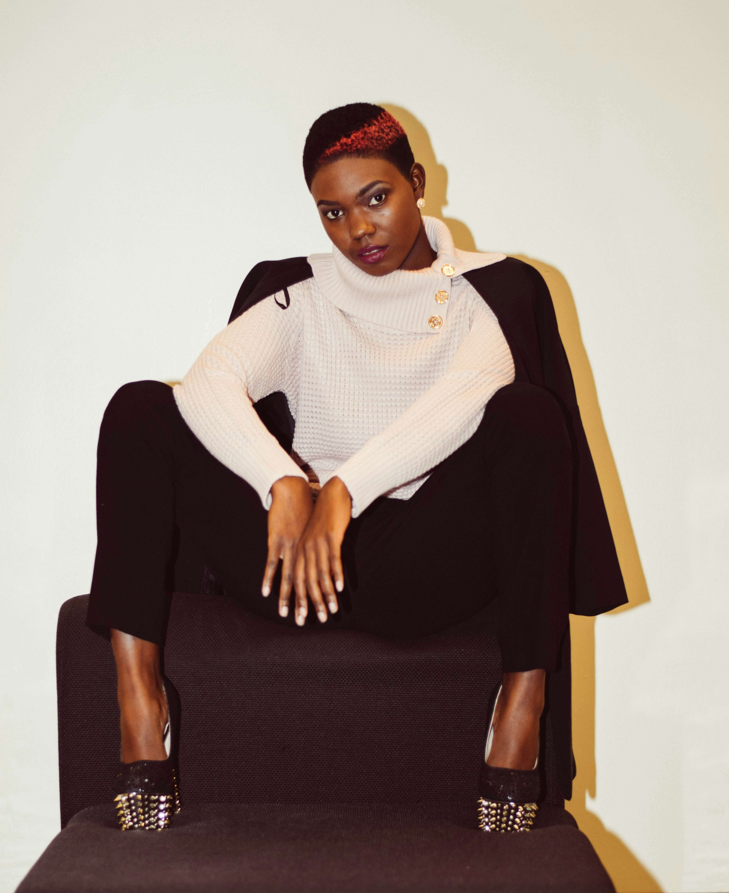
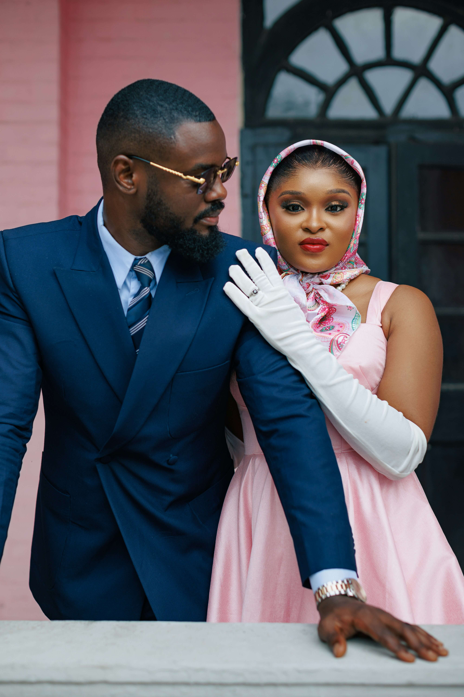
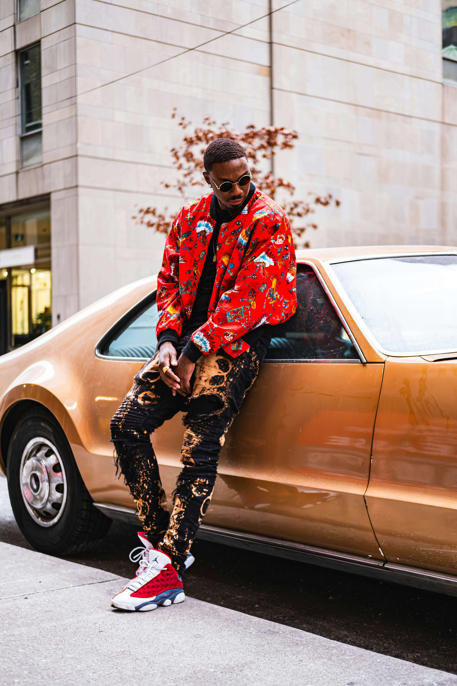
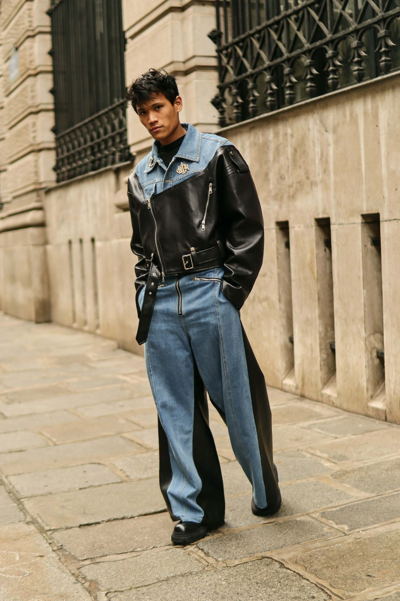

As the fashion industry continues to evolve, sustainability has
become a key focus for designers and consumers alike. In 2025,
sustainable fashion is not just a trend but a movement towards a
more eco-friendly and ethical approach to clothing. From using
organic materials to adopting fair trade practices, the industry
is making significant strides in reducing its environmental
impact.

2024's Top Color Trends
In 2025, the fashion industry is witnessing a significant shift
towards sustainability. This movement is not just a fleeting trend
but a fundamental change in how fashion is produced and consumed.
Sustainable fashion focuses on creating clothing that is
environmentally friendly and ethically made, ensuring a positive
impact on both the planet and the people involved in the
production process.
How to Style Oversized Blazers
Wear with tailored trousers for work or jeans for casual outings.
Add a belt to cinch the waist.
Sustainable Fashion Brands to Know
Stella McCartney, Patagonia, and Reformation lead with
eco-friendly materials and circular practices.
Low-Rise Jeans: Yay or Nay?
Back in style, but prioritize comfort. Pair with cropped tops or
layer with tunics..
Accessorizing with Statement Belts
Cinch dresses, layer over blazers, or add flair to jeans. Go bold
with colors or textures.
Celebrity Wedding Guest Looks
Steal ideas from Blake Lively's pastel gowns or Zendaya's tailored
suits.
Quiet Luxury: The New Logomania
Swap logos for minimalist, high-quality pieces like cashmere
sweaters and leather loafers.
Thrifting Hacks for Designer Finds
Check men's sections for oversized blazers and vintage bags.
Inspect seams and labels.Check men's sections for oversized
blazers and vintage bags. Inspect seams and labels.
Mastering Athleisure
Pair leggings with oversized sweaters or blazers. Add white
sneakers for a polished finish.
The Power of Red
Wear red for confidence. Try a red blazer for work or a dress for
date night.
Gen Z's Y2K Influence
Bucket hats, cargo pants, and bedazzled tops are back. Embrace the nostalgia.
Caring for Leather Goods
Condition leather jackets and bags seasonally. Store in cool, dry places.
Midi Dresses for Every Body
Flattering for all shapes. Add heels for height or boots for edge.
Menswear-Inspired Looks for Women
From classic Stan Smiths to chunky dad shoes. Pair with dresses or jeans.
Metallic Outfit Formulas
Balance silver or gold with neutrals. Try metallic skirts or blazers.
Winter Coats That Work
Invest in a warm parka or wool blend coat. Add a scarf for extra style.
Mixing Prints Without Clashing
Pair stripes with florals or animal prints. Keep colors cohesive.
Affordable Designer Bag Dupes
Find lookalikes for Chanel, Hermès, and Bottega on a budget.
Cottagecore Aesthetic
Flowy dresses, lace, and pastoral prints. Perfect for spring.
Denim Evolution: Wide-Leg vs. Skinny
Wide-leg jeans make a comeback while skinny styles remain classic. Learn how to style both cuts for different occasions and body types.
Sustainable Accessories Guide
Discover eco-friendly jewelry, bags, and shoes made from recycled materials and sustainable practices. Make conscious choices without sacrificing style.
Office Wear Revolution
Modern workwear combines comfort with professionalism. From elevated basics to statement pieces, create a versatile corporate wardrobe.
Vintage Shopping Tips
Expert advice on finding hidden gems at thrift stores and vintage boutiques. Learn to spot quality pieces and authenticate designer items.
Minimalist Wardrobe Essentials
Build a timeless capsule wardrobe with versatile pieces. Focus on quality over quantity for sustainable style.

Layering Techniques for All Seasons
Master the art of layering from summer to winter. Create depth and interest while maintaining comfort and practicality.
Sneaker Culture Evolution
From athletic wear to luxury fashion, explore how sneakers became a style statement. Tips for collecting and styling premium sneakers.
Pattern Mixing Masterclass
Break traditional rules and learn to combine prints confidently. Create eye-catching outfits that express your personality.
Jewelry Trends: Less is More
Embrace minimal jewelry with maximum impact. Stack delicate pieces or make a statement with one bold accessory.

Festival Fashion Guide
Practical yet stylish outfit ideas for music festivals and outdoor events. Balance comfort with creative expression.
Capsule Wardrobe for Travel
Pack smart with versatile pieces that mix and match. Create multiple outfits from a minimal selection of clothing.
The Art of Color Blocking
Master bold color combinations for striking outfits. Learn which colors complement each other and how to balance bright hues.
Sustainable Fabric Guide
Understanding eco-friendly materials from organic cotton to recycled polyester. Make informed choices for your wardrobe.

Evening Wear Essentials
Build a collection of versatile formal pieces. From cocktail dresses to formal suits, be ready for any special occasion.
Shoe Care 101
Extend the life of your footwear with proper maintenance. Tips for cleaning, storing, and protecting different types of shoes.
Androgynous Style Guide
Break gender norms with fluid fashion choices. Mix traditionally masculine and feminine elements for modern looks.
Vintage Denim Care
Preserve and maintain classic denim pieces. Learn washing techniques and repair methods for lasting wear.
Luxury on a Budget
Achieve high-end looks without breaking the bank. Smart shopping strategies and styling tricks for elegant outfits.
Seasonal Color Analysis
Discover your perfect color palette based on skin tone and undertones. Choose clothes that make you glow.
Future of Fashion Tech
Explore innovations in smart fabrics, 3D-printed clothing, and sustainable manufacturing. The intersection of technology and style.